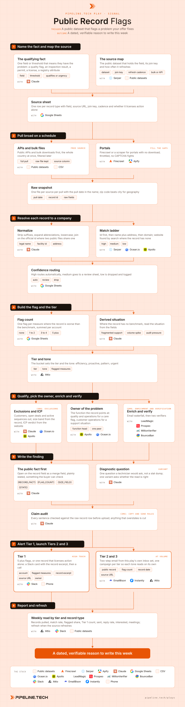

Public Record Flags
Install the Pipeline.tech "Public Record Flags" outbound play. Fetch https://raw.githubusercontent.com/pipeline-tech/plays/main/core/SKILL.md and https://raw.githubusercontent.com/pipeline-tech/plays/main/plays/public-record-flags/SKILL.md, save them as ~/.claude/skills/pipeline-outbound-core/SKILL.md and ~/.claude/skills/pipeline-public-record-flags/SKILL.md, then run /pipeline-public-record-flags.

Government and regulator datasets hold dated, verifiable facts about the companies you sell to: quality scores, inspection results, permits, licenses, filing fields, registry attributes like asset size or branch count. No data vendor packages them, so almost nobody emails on them, and the buyer can check every word against the record. Find the field that says a prospect has the problem you fix, and write to the person who owns it.
Load pipeline-outbound-core first. Where a step says "apply core", follow that section of the core skill.
Inputs
Ask for these before step 1 and save them to ./pipeline-plays.config.json:
- The ICP in one paragraph: industry, size band, geography, the problem you solve, who owns it.
- The fact, as one sentence a buyer would recognise: "hospitals worse than the national average on an infection measure". If unknown, step 1 works it out.
- Stack answers from core section 1, plus any dataset already in mind.
- The offer in one sentence and one proof point.
Steps
1Name the fact and map the source
- Two kinds of fact: one that qualifies (bed count, asset size, branch count) and one that creates urgency (worse than a benchmark, a failed inspection, a new permit). Most runs need one of each.
- Find the public source: health agencies publish quality measures per facility, financial regulators publish call reports, telecom regulators publish coverage filings, cities publish permits. Locate the dataset page, API docs and bulk download.
- Record the join key (facility id, legal name, domain, address) and the refresh cadence.
- Read ten raw records by hand first; the nursing home file is not the hospital file.
2Pull broad on a schedule
- Pull the whole dataset, not a filtered slice; filter in step 4. Public APIs and bulk downloads first, Firecrawl or an Apify scraper for portals with no download, throttled.
- Zip code beats city: spellings vary across public files, zips join cleanly and roll up to any region.
- Keep the raw file untouched with a
sourcecolumn and the pull date; every claim in step 6 traces to a row in it. Schedule the pull to the cadence from step 1.
3Resolve each record to a company
- Public records name legal entities, not brands. Strip Inc and LLC, expand abbreviations, lowercase. Where two files share an official id, join on it and skip names.
- Match in order: id, then normalized name plus address (zip, not city), then domain. A search on legal name plus city finds the website for roughly nine in ten.
- High confidence routes on, medium goes to a review sheet the user clears weekly, low is dropped and logged. Resolve to the entity that makes the buying decision; keep the parent as a column.
4Build the flag and the tier
- Count or derive. Count: one flag per measure where the record is worse than its benchmark, summed per account. Derive: where the record has no benchmark, read the situation from the fields. Branch count means fragmented support, fiber build-out means a support volume spike, "Federal" in a credit union's name means audit trail pressure.
- Bucket: none, 1 to 2, 3 to 4, 5 plus, or equivalent thresholds for a derived situation. Tone per bucket: efficiency, proactive, pattern, urgent. Urgent means a direct ask, never a scare.
- Store flag count, flagged measures, record date and source URL on the account. Apply core: tiering.
5Qualify, pick the owner, enrich and verify
- Apply core: exclusions. The record often carries the size field (beds, assets, subscribers); drop everything under the ICP threshold before any paid lookup.
- The owner is the function the record points at: an infection measure points at operations and quality (COO, VP Operations, CNO, compliance), a branch count at customer operations. Never the registrant on the filing. Add one peer.
- Apply core: enrichment. Apply core: verification.
6Write the finding
- Apply core: copy and send rules. Under 50 words.
- Lead with the fact as merge fields: "{HOSPITAL} shows worse than the national average on {FLAG_COUNT} infection measures in the latest public quality file." No adjectives.
- Follow with a diagnostic question in the tier's tone, the kind a technician asks before quoting a job, not a stat dump.
- One variant asks whether the read is right: "Reading that right, or is the public file behind?"
- Audit before upload: a model compares every sentence to the raw row. Five flags means five rows; the benchmark label is the dataset's own, never a paraphrase. Cut anything the record does not say; never imply causation.
- Email 2 names the source and offers the record. One set per tier, approved by the user before upload.
7Alert Tier 1, launch Tiers 2 and 3
- Tier 1: 5 plus flags, or a single record that licenses action alone (a failed inspection, a new permit). Slack card with the account, flagged measures, verbatim excerpt, source URL, owner and a one-line opener; the owner calls within 48 hours.
- Tier 2 and 3: upload with
{RECORD_FACT},{FLAG_COUNT},{SIZE_FIELD},{STATE}, one campaign per tier from this play's own inbox set. - Write every account to the CRM with signal type
public record, flag count, record date and source URL. Stop on a reply, a booking, an open deal, or a cleared flag.
8Report and refresh
- Weekly: records pulled, match rate, flagged share, Tier 1 count, sent, reply rate, interested, meetings, split by tier and record type.
- Refresh when the source refreshes; a cleared flag stops the sequence, a new flag re-enters at step 4.
- Apply core: credits and handoff.
Guardrails
- Never write anything the record does not say. Quote the dataset's own label; never upgrade it to "failing" or "dangerous".
- Never imply the buyer was watched. The record is public; name the source when asked.
- A record older than its refresh cycle comes out of the copy.
- Medium and low confidence matches never send; a wrong-entity email about a quality flag does real harm.
- One account, one sequence, tone set by tier. Five flags earn a call, not five emails.
Example run
User: "/pipeline-public-record-flags for our healthcare consent software, ICP is US hospitals with 50 or more beds, COO or VP Operations"
- Named the fact: worse than the national average on any of five infection measures or the complications file; join key the facility id; quarterly refresh.
- Pulled all three files whole: 6,103 hospitals with bed counts, 172,476 infection rows, 95,820 complication rows.
- Joined on facility id; websites by search on legal name plus city, 88% hit rate.
- 776 hospitals flagged (23%), 202 high-risk at 5 plus, about 200 at 3 to 4, about 374 at 1 to 2.
- Dropped under 50 beds, customers and open deals. COO or VP Operations plus one compliance peer, verified.
- Four copy sets by tier, under 50 words, audited against the record.
- 202 Tier 1 Slack cards queued for calls over four weeks; Tiers 2 and 3 loaded to "Public Record Flags, hospitals" with
{HOSPITAL},{FLAG_COUNT},{BEDS},{STATE}.
A second run for a customer-support software client derived the flag from registries: credit union call reports above one billion in assets and telecom coverage filings for regional ISPs gave 888 accounts, 448 credit unions and 440 ISPs, 130 of them fiber providers in growth mode. Branch count read as fragmented support, fiber build-out as a volume spike, each with its own diagnostic opener.